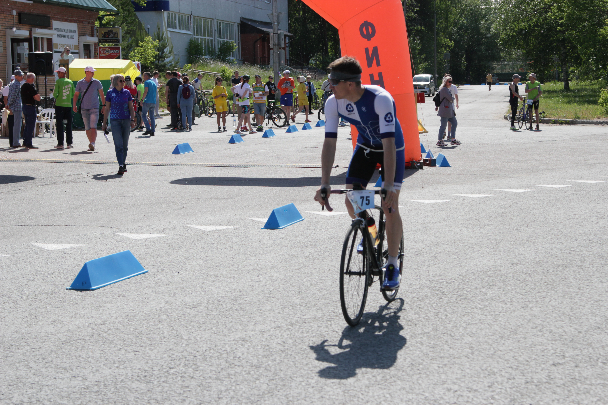

Hello! This is my Resume
My name is Shadrin Evgeniy Vlaimirovich
Born in 23.01.1982
Education
2015 Национальный исследовательский Томский политехнический университет, Томск Энергетический институт, Тепловые электрические станции
2002 Томский автомобильно-дорожный техникум Автомобили и автомобильное хозяйство, Техник-механик
My skills
web development
AutoCAD
MS Office
My hobbis
practice web development
cycling, runing, swimming
DIY
Contact Me
My awards